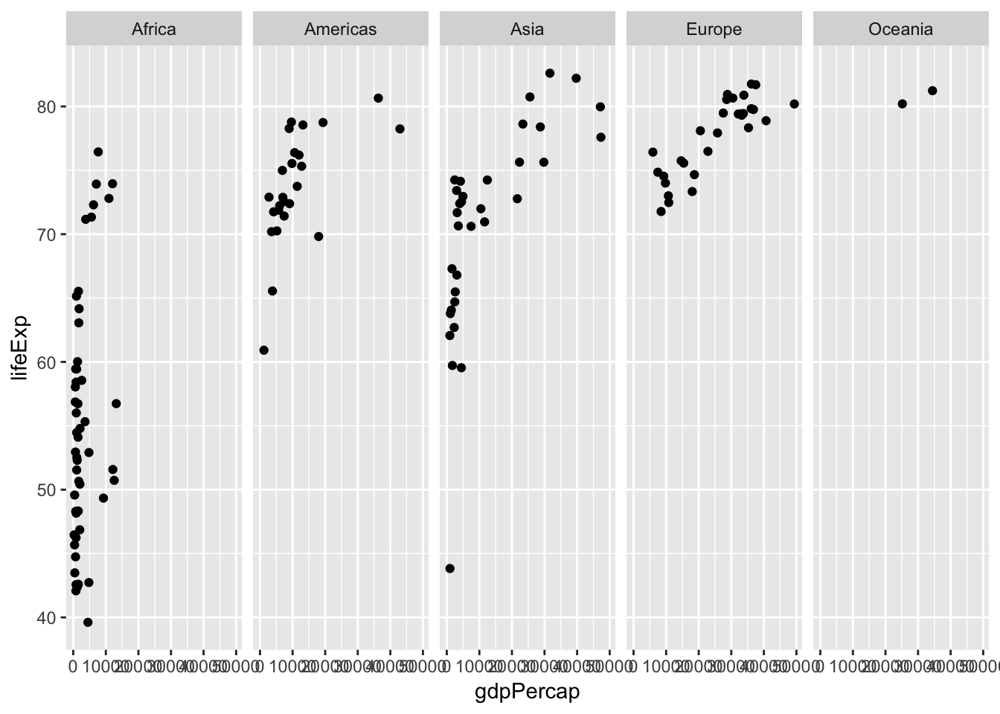

데이터 가공과 시각화
Preparations
dplyr 와 gapminder 패키지를 설치하고, 로딩합니다.
install.packages("dplyr")
install.packages("gapminder")library(dplyr)
library(gapminder)[Note]
R에서 패키지(package)는 함수, 데이터, 코드, 문서 등을 묶어놓은 것을 말합니다. R을 설치하면 자동으로 기본 패키지들이 설치되는데, 이들이 제공하지 못하는 기능들은 새로운 패키지를 설치해서 사용합니다. 현재 10,000여개 이상의 패키지들이 CRAN, Bioconductor, GitHub 등의 repository에 저장되어 있습니다.
R packages: Beginner’s Guide
데이터 가공(Data wrangling)
the process of transforming and mapping data from one “raw” data form into another format with the intent of making it more appropriate and valuable for a variety of downstream purposes such as analytics.
Learning Objectives
- Select columns in a data frame with the dplyr function select.
- Select rows in a data frame according to filtering conditions with the dplyr function filter.
- Direct the output of one dplyr function to the input of another function with the ‘pipe’ operator %>%.
- Add new columns to a data frame that are functions of existing columns with mutate.
- Understand the split-apply-combine concept for data analysis. Use summarize, group_by, and tally to split a data frame into groups of observations, apply a summary statistics for each group, and then combine the results.
gapminder 데이터셋 둘러보기
gapminder 데이터는 국가별 년도별 life expectancy, GDP per capita, 그리고 population에 대한 데이터입니다.
head(gapminder)
## # A tibble: 6 x 6
## country continent year lifeExp pop gdpPercap
## <fct> <fct> <int> <dbl> <int> <dbl>
## 1 Afghanistan Asia 1952 28.8 8425333 779.
## 2 Afghanistan Asia 1957 30.3 9240934 821.
## 3 Afghanistan Asia 1962 32.0 10267083 853.
## 4 Afghanistan Asia 1967 34.0 11537966 836.
## 5 Afghanistan Asia 1972 36.1 13079460 740.
## 6 Afghanistan Asia 1977 38.4 14880372 786.
str(gapminder)
## Classes 'tbl_df', 'tbl' and 'data.frame': 1704 obs. of 6 variables:
## $ country : Factor w/ 142 levels "Afghanistan",..: 1 1 1 1 1 1 1 1 1 1 ...
## $ continent: Factor w/ 5 levels "Africa","Americas",..: 3 3 3 3 3 3 3 3 3 3 ...
## $ year : int 1952 1957 1962 1967 1972 1977 1982 1987 1992 1997 ...
## $ lifeExp : num 28.8 30.3 32 34 36.1 ...
## $ pop : int 8425333 9240934 10267083 11537966 13079460 14880372 12881816 13867957 16317921 22227415 ...
## $ gdpPercap: num 779 821 853 836 740 ...
summary(gapminder)
## country continent year lifeExp
## Afghanistan: 12 Africa :624 Min. :1952 Min. :23.60
## Albania : 12 Americas:300 1st Qu.:1966 1st Qu.:48.20
## Algeria : 12 Asia :396 Median :1980 Median :60.71
## Angola : 12 Europe :360 Mean :1980 Mean :59.47
## Argentina : 12 Oceania : 24 3rd Qu.:1993 3rd Qu.:70.85
## Australia : 12 Max. :2007 Max. :82.60
## (Other) :1632
## pop gdpPercap
## Min. :6.001e+04 Min. : 241.2
## 1st Qu.:2.794e+06 1st Qu.: 1202.1
## Median :7.024e+06 Median : 3531.8
## Mean :2.960e+07 Mean : 7215.3
## 3rd Qu.:1.959e+07 3rd Qu.: 9325.5
## Max. :1.319e+09 Max. :113523.1
## filter
조건에 맞는 관측치만 골라내기
gapminder %>%
filter(year == 1957)
## # A tibble: 142 x 6
## country continent year lifeExp pop gdpPercap
## <fct> <fct> <int> <dbl> <int> <dbl>
## 1 Afghanistan Asia 1957 30.3 9240934 821.
## 2 Albania Europe 1957 59.3 1476505 1942.
## 3 Algeria Africa 1957 45.7 10270856 3014.
## 4 Angola Africa 1957 32.0 4561361 3828.
## 5 Argentina Americas 1957 64.4 19610538 6857.
## 6 Australia Oceania 1957 70.3 9712569 10950.
## 7 Austria Europe 1957 67.5 6965860 8843.
## 8 Bahrain Asia 1957 53.8 138655 11636.
## 9 Bangladesh Asia 1957 39.3 51365468 662.
## 10 Belgium Europe 1957 69.2 8989111 9715.
## # … with 132 more rowsgapminder %>%
filter(country == "Korea, Rep.")
## # A tibble: 12 x 6
## country continent year lifeExp pop gdpPercap
## <fct> <fct> <int> <dbl> <int> <dbl>
## 1 Korea, Rep. Asia 1952 47.5 20947571 1031.
## 2 Korea, Rep. Asia 1957 52.7 22611552 1488.
## 3 Korea, Rep. Asia 1962 55.3 26420307 1536.
## 4 Korea, Rep. Asia 1967 57.7 30131000 2029.
## 5 Korea, Rep. Asia 1972 62.6 33505000 3031.
## 6 Korea, Rep. Asia 1977 64.8 36436000 4657.
## 7 Korea, Rep. Asia 1982 67.1 39326000 5623.
## 8 Korea, Rep. Asia 1987 69.8 41622000 8533.
## 9 Korea, Rep. Asia 1992 72.2 43805450 12104.
## 10 Korea, Rep. Asia 1997 74.6 46173816 15994.
## 11 Korea, Rep. Asia 2002 77.0 47969150 19234.
## 12 Korea, Rep. Asia 2007 78.6 49044790 23348.arrange
오름차순
gapminder %>%
arrange(gdpPercap)
## # A tibble: 1,704 x 6
## country continent year lifeExp pop gdpPercap
## <fct> <fct> <int> <dbl> <int> <dbl>
## 1 Congo, Dem. Rep. Africa 2002 45.0 55379852 241.
## 2 Congo, Dem. Rep. Africa 2007 46.5 64606759 278.
## 3 Lesotho Africa 1952 42.1 748747 299.
## 4 Guinea-Bissau Africa 1952 32.5 580653 300.
## 5 Congo, Dem. Rep. Africa 1997 42.6 47798986 312.
## 6 Eritrea Africa 1952 35.9 1438760 329.
## 7 Myanmar Asia 1952 36.3 20092996 331
## 8 Lesotho Africa 1957 45.0 813338 336.
## 9 Burundi Africa 1952 39.0 2445618 339.
## 10 Eritrea Africa 1957 38.0 1542611 344.
## # … with 1,694 more rows내림차순
gapminder %>%
arrange(desc(gdpPercap))
## # A tibble: 1,704 x 6
## country continent year lifeExp pop gdpPercap
## <fct> <fct> <int> <dbl> <int> <dbl>
## 1 Kuwait Asia 1957 58.0 212846 113523.
## 2 Kuwait Asia 1972 67.7 841934 109348.
## 3 Kuwait Asia 1952 55.6 160000 108382.
## 4 Kuwait Asia 1962 60.5 358266 95458.
## 5 Kuwait Asia 1967 64.6 575003 80895.
## 6 Kuwait Asia 1977 69.3 1140357 59265.
## 7 Norway Europe 2007 80.2 4627926 49357.
## 8 Kuwait Asia 2007 77.6 2505559 47307.
## 9 Singapore Asia 2007 80.0 4553009 47143.
## 10 Norway Europe 2002 79.0 4535591 44684.
## # … with 1,694 more rowsmutate
백만명단위로 인구수 변환
gapminder %>%
mutate(pop = pop/1000000)
## # A tibble: 1,704 x 6
## country continent year lifeExp pop gdpPercap
## <fct> <fct> <int> <dbl> <dbl> <dbl>
## 1 Afghanistan Asia 1952 28.8 8.43 779.
## 2 Afghanistan Asia 1957 30.3 9.24 821.
## 3 Afghanistan Asia 1962 32.0 10.3 853.
## 4 Afghanistan Asia 1967 34.0 11.5 836.
## 5 Afghanistan Asia 1972 36.1 13.1 740.
## 6 Afghanistan Asia 1977 38.4 14.9 786.
## 7 Afghanistan Asia 1982 39.9 12.9 978.
## 8 Afghanistan Asia 1987 40.8 13.9 852.
## 9 Afghanistan Asia 1992 41.7 16.3 649.
## 10 Afghanistan Asia 1997 41.8 22.2 635.
## # … with 1,694 more rows총국민소득 구하기
gapminder %>%
mutate(gdp = gdpPercap*pop)
## # A tibble: 1,704 x 7
## country continent year lifeExp pop gdpPercap gdp
## <fct> <fct> <int> <dbl> <int> <dbl> <dbl>
## 1 Afghanistan Asia 1952 28.8 8425333 779. 6567086330.
## 2 Afghanistan Asia 1957 30.3 9240934 821. 7585448670.
## 3 Afghanistan Asia 1962 32.0 10267083 853. 8758855797.
## 4 Afghanistan Asia 1967 34.0 11537966 836. 9648014150.
## 5 Afghanistan Asia 1972 36.1 13079460 740. 9678553274.
## 6 Afghanistan Asia 1977 38.4 14880372 786. 11697659231.
## 7 Afghanistan Asia 1982 39.9 12881816 978. 12598563401.
## 8 Afghanistan Asia 1987 40.8 13867957 852. 11820990309.
## 9 Afghanistan Asia 1992 41.7 16317921 649. 10595901589.
## 10 Afghanistan Asia 1997 41.8 22227415 635. 14121995875.
## # … with 1,694 more rows데이터 요약(Summary)
summarize
2007년의 평균 기대수명
gapminder %>%
filter(year == 2007) %>%
summarize(meanLifeExp = mean(lifeExp))
## # A tibble: 1 x 1
## meanLifeExp
## <dbl>
## 1 67.02007년의 평균 기대수명과 총인구수
gapminder %>%
filter(year == 2007) %>%
summarise(meanLifeExp = mean(lifeExp), totPop = sum(as.numeric(pop))) # integer overflow, 2*10^9
## # A tibble: 1 x 2
## meanLifeExp totPop
## <dbl> <dbl>
## 1 67.0 6251013179group_by
년도별 평균 기대수명
gapminder %>%
group_by(year) %>%
summarise(meanLifeExp = mean(lifeExp))
## # A tibble: 12 x 2
## year meanLifeExp
## <int> <dbl>
## 1 1952 49.1
## 2 1957 51.5
## 3 1962 53.6
## 4 1967 55.7
## 5 1972 57.6
## 6 1977 59.6
## 7 1982 61.5
## 8 1987 63.2
## 9 1992 64.2
## 10 1997 65.0
## 11 2002 65.7
## 12 2007 67.0년도별 대륙별 평균 기대수명
gapminder %>%
group_by(continent, year) %>%
summarize(meanLifeExp = mean(lifeExp))
## # A tibble: 60 x 3
## # Groups: continent [5]
## continent year meanLifeExp
## <fct> <int> <dbl>
## 1 Africa 1952 39.1
## 2 Africa 1957 41.3
## 3 Africa 1962 43.3
## 4 Africa 1967 45.3
## 5 Africa 1972 47.5
## 6 Africa 1977 49.6
## 7 Africa 1982 51.6
## 8 Africa 1987 53.3
## 9 Africa 1992 53.6
## 10 Africa 1997 53.6
## # … with 50 more rows데이터 시각화(Data visualization)
“Visualization is any technique for creating images, diagrams, or animations to communicate a message” - Wikipedia
“One picture is worth ten thousand words”
“백수이불여일화 百數以不如一畵”
“The simple graph has brought more information to the data analyst’s mind than any other device.” — John Tukey
load ggplot2
library(ggplot2)ggplot2
- by Hadley Wickham
- based on “Grammar of Graphics” (그래픽의 각 요소를 구분하여 취급)
- incremental method (기초 플롯을 생성한 후, 필요한 그래픽 요소들을 붙이는 방식)
scatter plot
scatter plot: gdpPercap vs. lifeExp in year 2007
2007년 1인당 국민소득과 기대수명의 관계를 산점도로 그리기
gapminder_2007 <- gapminder %>%
filter(year == 2007) ggplot(data = gapminder_2007, aes(x=gdpPercap, y=lifeExp)) + geom_point()
additional aesthetics
그래픽 요소(color, size)에 데이터를 매핑
ggplot(data = gapminder_2007, aes(x=gdpPercap, y=lifeExp, color=continent, size=pop)) + geom_point()faceting
ggplot(data = gapminder_2007, aes(x=gdpPercap, y=lifeExp)) +
geom_point() +
facet_wrap(~continent)line plot
대륙별로 평균 기대수명의 연도에 따른 변화를 보자.
year_continent = gapminder %>%
group_by(continent, year) %>%
summarize(meanLifeExp = mean(lifeExp))
p = ggplot(data = year_continent, aes(x=year, y=meanLifeExp, color=continent)) + geom_point()
p = p + geom_line()
pp + expand_limits(y=0) 2007년 1인당 국민소득과 기대 수명의 관계를 산점도로 그리고, 선형 회귀직선을 그려보자.
p <- ggplot(gapminder_2007, aes(gdpPercap, lifeExp)) + geom_point()
pp = p + scale_x_log10() # scale 함수
pgapminder_2007_coef = coef(lm(lifeExp ~ log10(gdpPercap), data = gapminder_2007))
gapminder_2007_coef
## (Intercept) log10(gdpPercap)
## 4.949612 16.585064p + geom_abline(intercept = gapminder_2007_coef["(Intercept)"],
slope = gapminder_2007_coef["log10(gdpPercap)"], color = "red")
통계적 데이터의 변환 함수를 이용하자.
pp + stat_smooth(method = "lm", se=F, color = "red") bar plot
대륙별 평균 기대수명의 비교. (bar plot)
by_continent = gapminder %>%
group_by(continent) %>%
summarise(meanLifeExp = mean(lifeExp))
ggplot(by_continent, aes(x=continent, y=meanLifeExp)) + geom_col()
histogram
기대수명의 분포 (histogram)
ggplot(gapminder, aes(x=lifeExp)) + geom_histogram()
## `stat_bin()` using `bins = 30`. Pick better value with `binwidth`.
5년 단위 구간(bins)
ggplot(gapminder, aes(x=lifeExp)) + geom_histogram(binwidth = 5)
box plot
대륙별 기대수명의 분포 비교 (box plot)
ggplot(gapminder, aes(x=continent, y=lifeExp)) + geom_boxplot()
ggplot2 plot 의 기본 성분과 구조
ggplot2 plot의 기본 성분
- Data: 주로 data frame 객체 형태의 데이터 - Aesthetic mappings: 데이터를 축, 색상, 점의 크기 등으로 매핑하는 방법 - Geometric object: 점, 선, 도형과 같은 기하학적 객체 - Scales: - Coordinate system: 좌표계 - Facetting: 조건부 플롯을 위해 패널을 분할하여 표현하는 방법 - Statistical transformation: Binning, quantiles, smoothing 등의 통계 변환 - Position adjustment: 위치의 조정
p <- ggplot(data = gapminder_2007, aes(x=gdpPercap, y=lifeExp)) + geom_point()
attributes(p)
## $names
## [1] "data" "layers" "scales" "mapping" "theme"
## [6] "coordinates" "facet" "plot_env" "labels"
##
## $class
## [1] "gg" "ggplot"
summary(p)
## data: country, continent, year, lifeExp, pop, gdpPercap [142x6]
## mapping: x = ~gdpPercap, y = ~lifeExp
## faceting: <ggproto object: Class FacetNull, Facet, gg>
## compute_layout: function
## draw_back: function
## draw_front: function
## draw_labels: function
## draw_panels: function
## finish_data: function
## init_scales: function
## map_data: function
## params: list
## setup_data: function
## setup_params: function
## shrink: TRUE
## train_scales: function
## vars: function
## super: <ggproto object: Class FacetNull, Facet, gg>
## -----------------------------------
## geom_point: na.rm = FALSE
## stat_identity: na.rm = FALSE
## position_identityggplot2 plot 의 구조
- ggplot = layers + scales + coordinate system - layers = data + mapping + geom + stat + position
ggplot2 함수군
- Plot creation: ggplot 클래스 객체를 생성하는 함수군
- Geoms: graphic 의 geometric (기하학적인 형태)을 지정하는 함수군
- Statistics: 데이터를 통계적인 관점으로 변환하는 함수군
- Scales: 축의 스케일 변환과 라벨, 범례 등을 변경하는 함수군
- Coordinate systems: 좌표계를 설정하는 함수군
- Faceting: 그래픽 facet layout 을 정의하는 함수군
- Position adjustment: geometric 의 위치를 지정하는 함수군
- Others
apropos("^geom_")
## [1] "geom_abline" "geom_area" "geom_bar"
## [4] "geom_bin2d" "geom_blank" "geom_boxplot"
## [7] "geom_col" "geom_contour" "geom_count"
## [10] "geom_crossbar" "geom_curve" "geom_density"
## [13] "geom_density_2d" "geom_density2d" "geom_dotplot"
## [16] "geom_errorbar" "geom_errorbarh" "geom_freqpoly"
## [19] "geom_hex" "geom_histogram" "geom_hline"
## [22] "geom_jitter" "geom_label" "geom_line"
## [25] "geom_linerange" "geom_map" "geom_path"
## [28] "geom_point" "geom_pointrange" "geom_polygon"
## [31] "geom_qq" "geom_qq_line" "geom_quantile"
## [34] "geom_raster" "geom_rect" "geom_ribbon"
## [37] "geom_rug" "geom_segment" "geom_sf"
## [40] "geom_sf_label" "geom_sf_text" "geom_smooth"
## [43] "geom_spoke" "geom_step" "geom_text"
## [46] "geom_tile" "geom_violin" "geom_vline"apropos("^stat_")
## [1] "stat_bin" "stat_bin_2d" "stat_bin_hex"
## [4] "stat_bin2d" "stat_binhex" "stat_boxplot"
## [7] "stat_contour" "stat_count" "stat_density"
## [10] "stat_density_2d" "stat_density2d" "stat_ecdf"
## [13] "stat_ellipse" "stat_function" "stat_identity"
## [16] "stat_qq" "stat_qq_line" "stat_quantile"
## [19] "stat_sf" "stat_sf_coordinates" "stat_smooth"
## [22] "stat_spoke" "stat_sum" "stat_summary"
## [25] "stat_summary_2d" "stat_summary_bin" "stat_summary_hex"
## [28] "stat_summary2d" "stat_unique" "stat_ydensity"